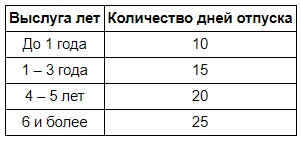

VacationScale - класс с одномерным массивом примитивного типа. Количество дней отпуска, который получает сотрудник некой компании по производству одежды DirectClothing, Inc. определяется по количеству лет, которые сотрудник отработал в компании.
Разработана соответствующая шкала:

1. Инициализируйте поле VacationScale.vacationDays таким образом, чтобы оно содержало массив отражающий заданную структуру.
2. Модифицируйте метод VacationScale.getVacationDays таким образом, чтобы он работал без ошибок также если при вызове будет передано количество лет выходящее за пределы индекса массива.
Для проверки решения щелкните Check
Ожидаемый результат: Тесты должны завершиться успешно с надписью Correct.